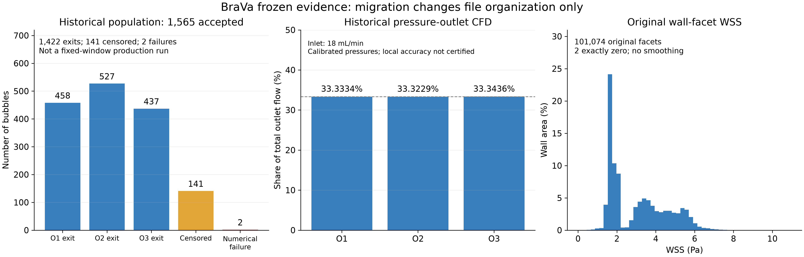

BraVa 人体血管：迁移后结果核查
本页读取原有结果。没有重新计算流场，没有新增正式微泡批次，也没有改动速度、壁面数据或终态。

下载矢量 PDF
怎样理解这些结果：1565 个微泡中，1422 个已从出口离开，141 个在观察结束时仍未出流，2 个发生数值失败。左右两个打印姿态使用同一物理解。
新协议的灌注时间是 1.240815660 秒，随后观察 10 秒，目前没有新协议的正式大批量结果。
全局流量平衡、CPU/GPU 一致或动画流畅，都不能证明每个近壁位置的流场准确。
原有四视角动画
黑底、蓝泡、英文、原始坐标网格和字号保持。逐帧低速筛选仅影响显示；科学账本仍包含全部 1565 个微泡。

仍未通过的科学检查
- Gmsh V2 参考管局部场精度：FAIL。
- P1 场误差及轨迹敏感性：原诊断结论保留。
- P2/P1：资源限制停止，曲面压力回填仍有失败；没有正式高阶流场。
- V3 网格：仅为提案。